Muito mais que estética:
o cuidado com saúde
começa pela boca.
Dentista em Bauru | Cuidado, Estética e Prevenção
Clínica Odontológica
Sorriso & Saúde
Na Sorriso e Saúde, cada detalhe importa. Cuidamos da saúde bucal de toda sua família de forma acolhedora, preventiva e totalmente personalizada, porque entendemos que cada sorriso tem uma história única.
Somos referência em Bauru quando o assunto é prevenção, estética e humanização. Do primeiro contato ao acompanhamento contínuo, nosso objetivo é que você se sinta acolhido, bem cuidado e com a certeza de que está em boas mãos.
Tratamos cada paciente com empatia, carinho e atenção personalizada. Criamos um ambiente onde você se sente seguro, confortável e valorizado, porque uma consulta ao dentista deve ser uma experiência positiva e transformadora.
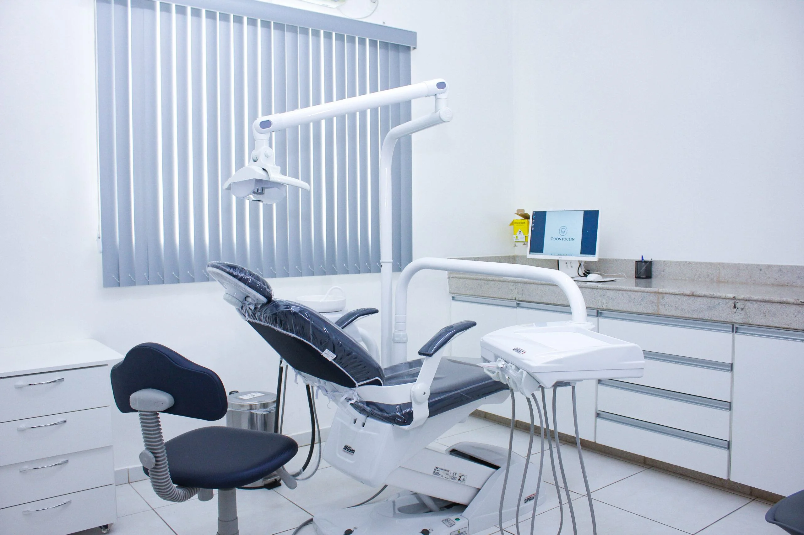
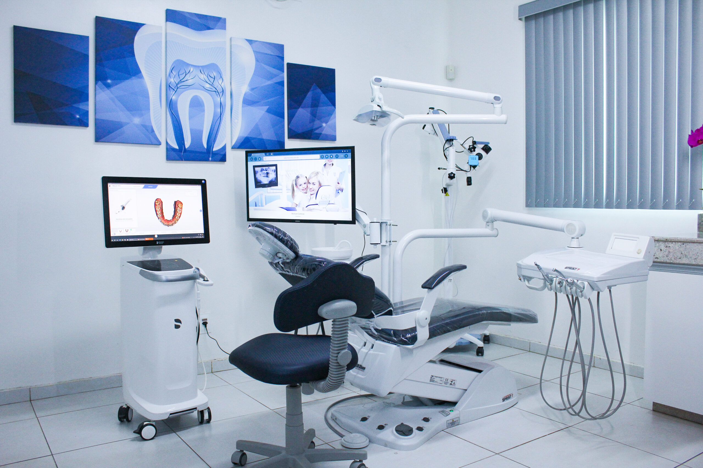
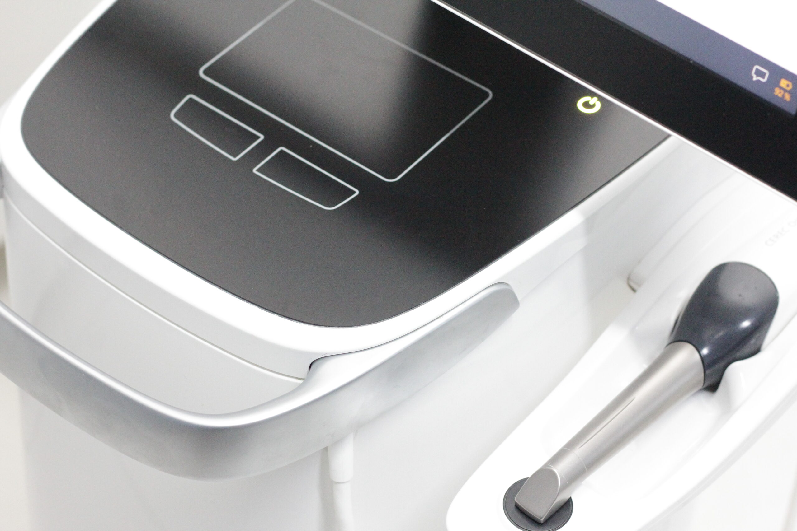
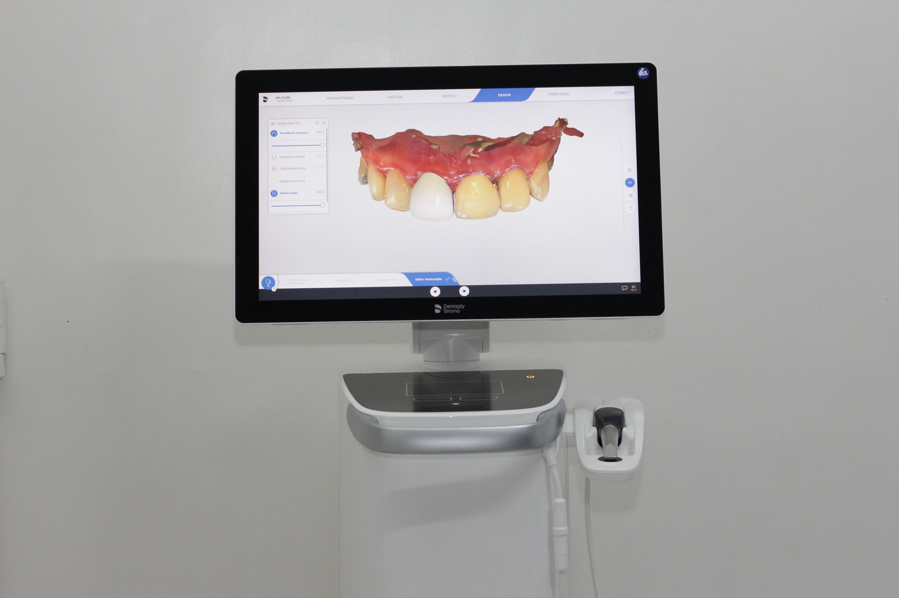
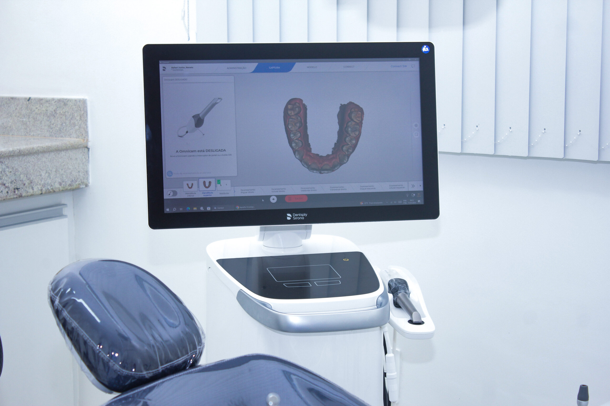
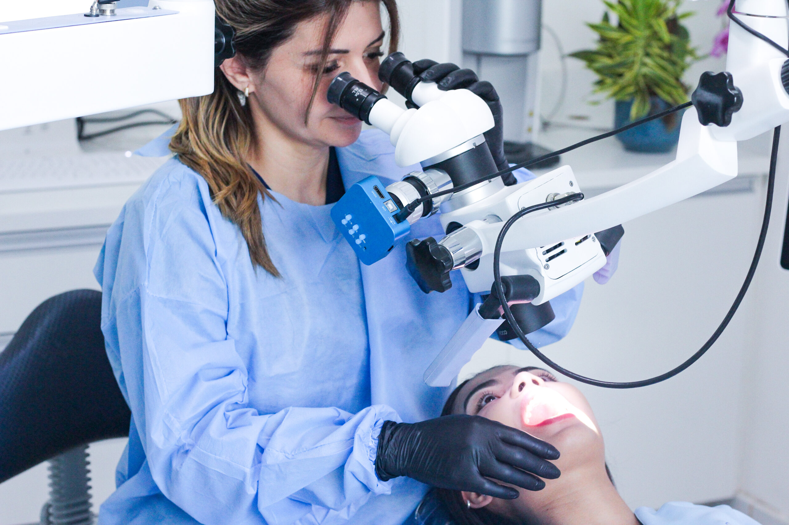
Tratamentos Odontológicos
Na Sorriso e Saúde, oferecemos atendimento completo e individualizado, com foco na prevenção, conforto e resultados duradouros. Conheça nossos principais tratamentos.
-
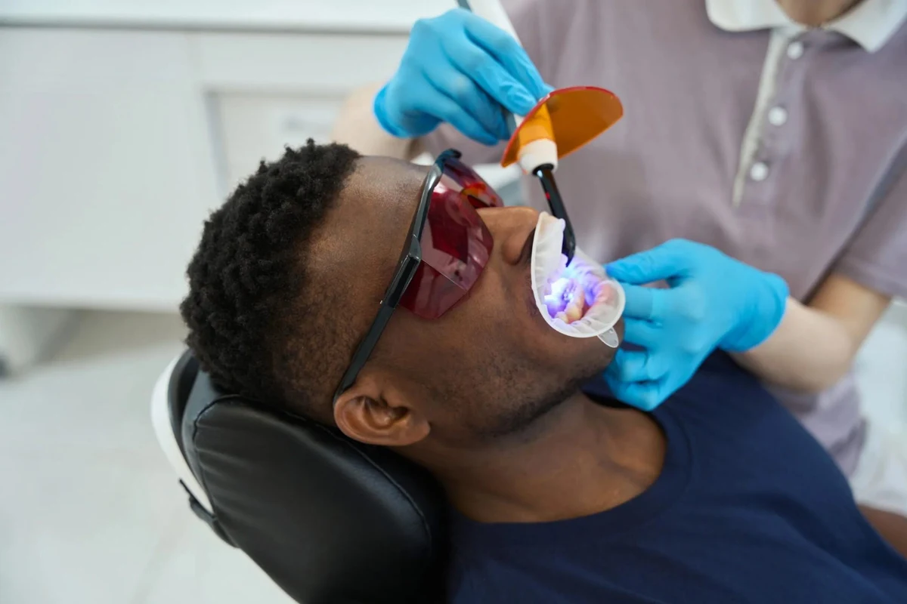
Clareamento dental
Cuidados voltados à estética e à aparência do sorriso.
-
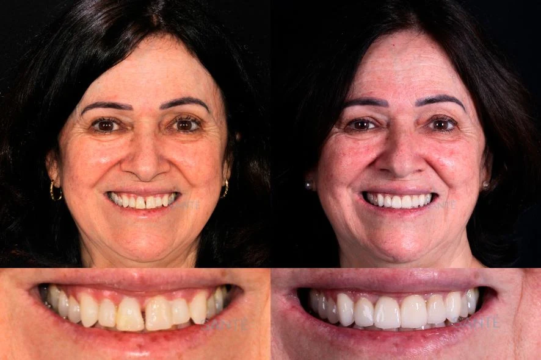
Lentes de contato dental
Conheça as possibilidades para a estética do seu sorriso.
-
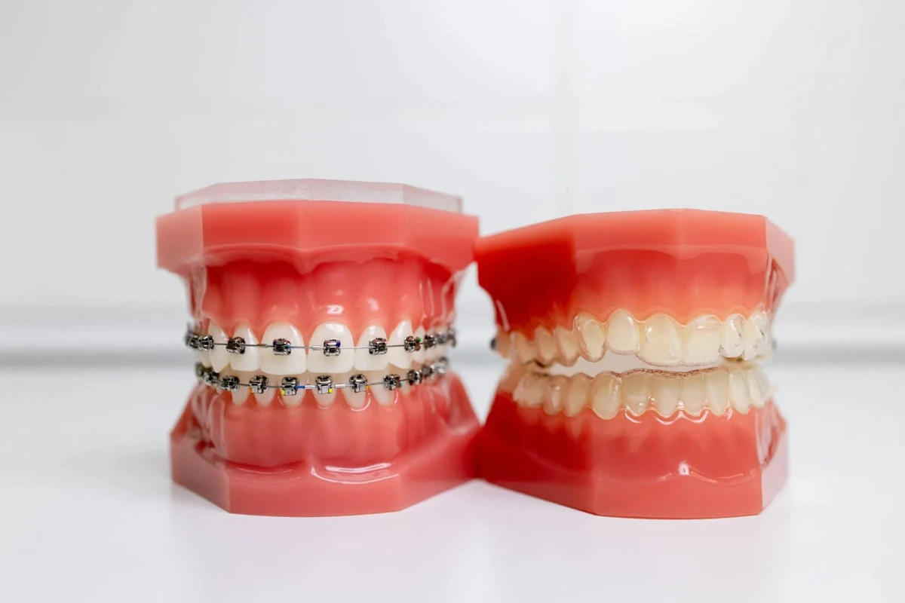
Ortodontia
Atendimento para quem busca orientação sobre alinhamento dental.
-
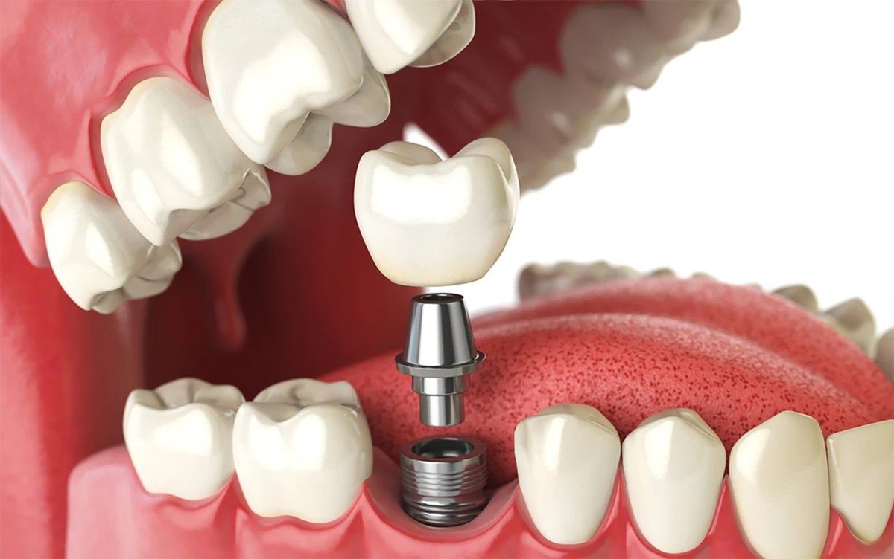
Implantes dentários
Conheça o atendimento para reposição de dentes.
-
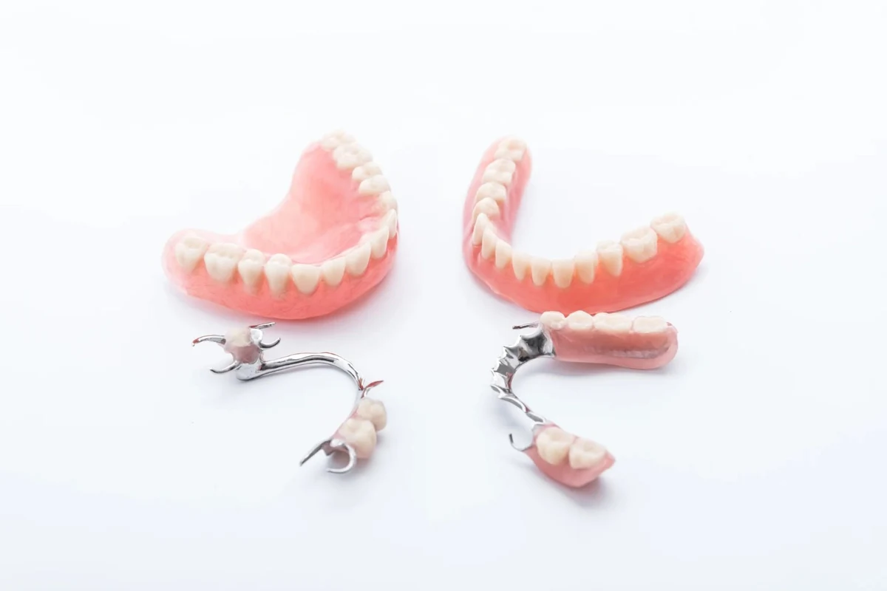
Próteses dentárias
Orientação sobre alternativas de reposição dentária.
-
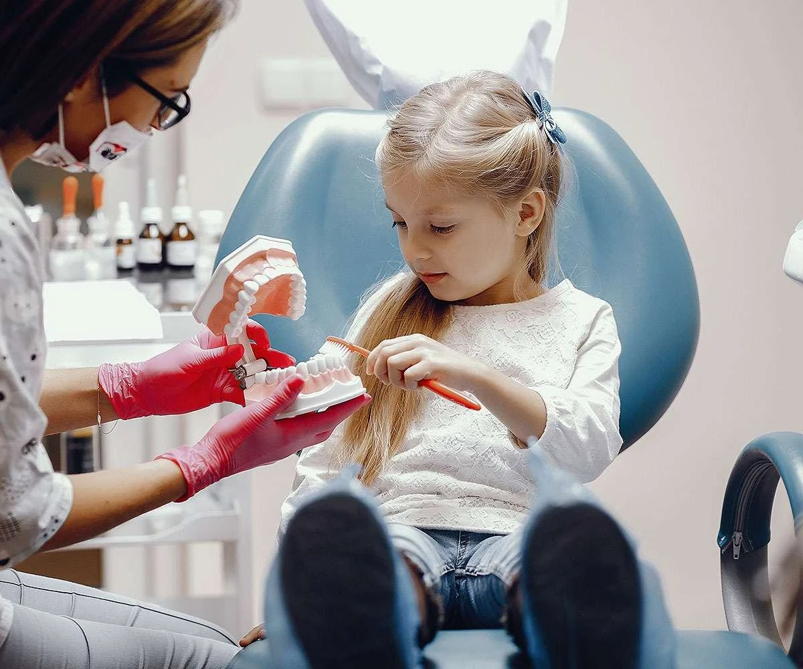
Odontopediatria
Acolhimento e atenção à saúde bucal dos pequenos.
-
Limpeza e prevenção
Um espaço para cuidar e esclarecer dúvidas sobre saúde bucal.
-
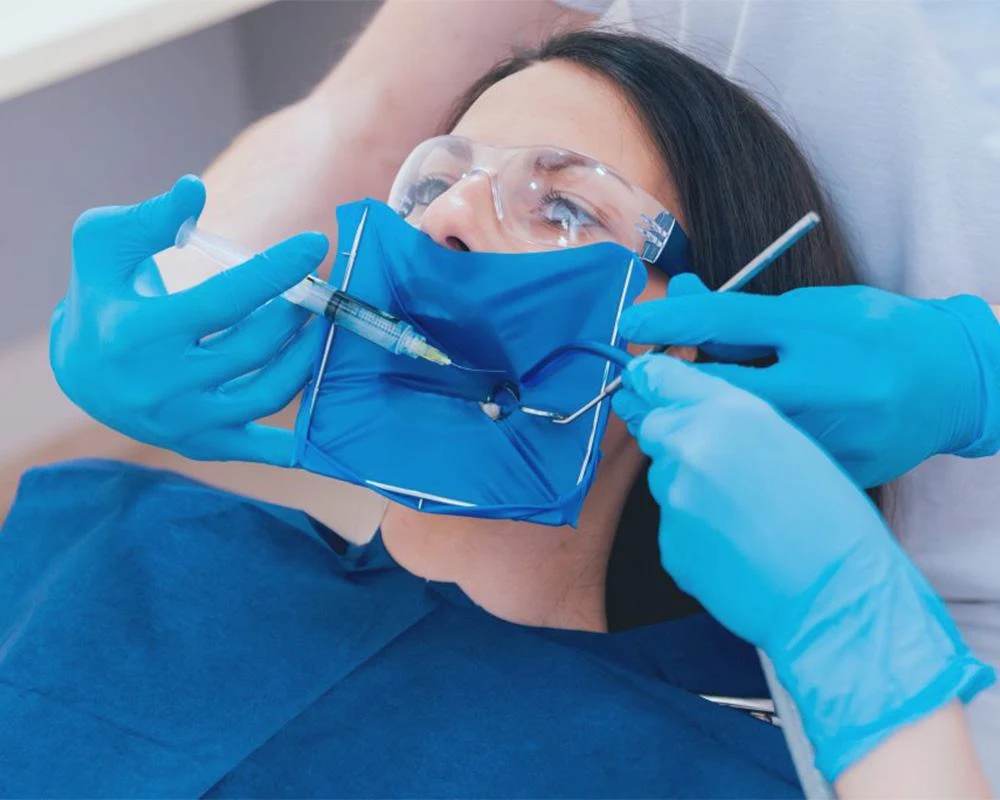
Tratamento de canal
Informação e acolhimento em cada etapa do atendimento.
-
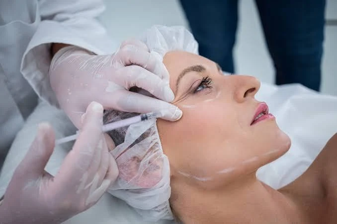
Harmonização orofacial
Conheça o atendimento e converse sobre suas expectativas.
Dra. Jane Doe - Cirurgiã-Dentista
(CRO-SP 123456)
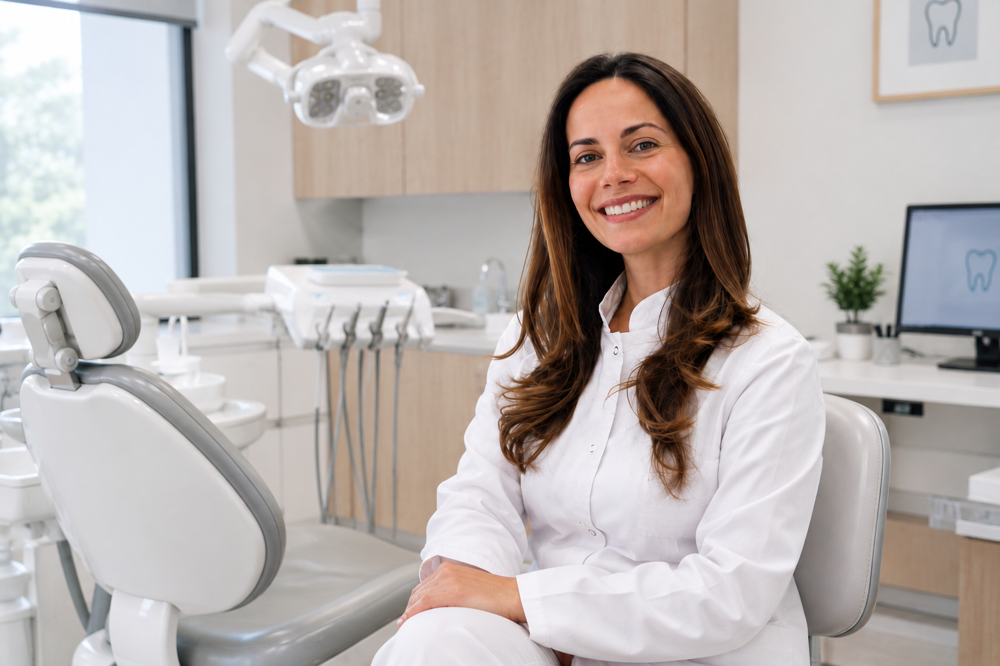
Prazer, sou a Dra. Jane Doe.
Sou cirurgiã-dentista formada pela Universidade Estadual Paulista
(UNESP - Botucatu) em 2014, com mais de 10 anos de experiência clínica.
Sou apaixonada por cuidar
de pessoas e transformar vidas por meio da prevenção. Acredito que um sorriso saudável vai muito além da
estética — ele representa autoestima, bem-estar e qualidade de vida.